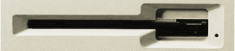
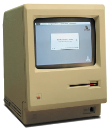
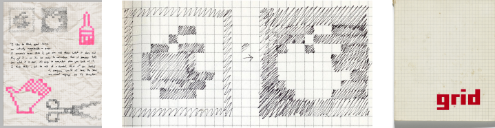
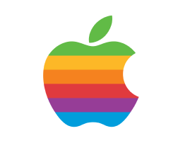
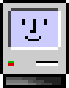
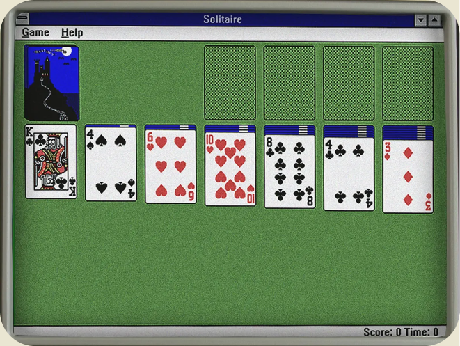
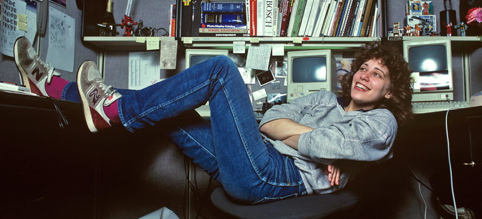

Susan Kare is a contemporary American designer and is famously known for her computer iconography.
Susan has designed many icons and typefaces for the famous brand apple.
Introduction
Born in Ithaca, New York in 1954 she went to Mount Holyoke College in 1975 and graduated with a B.A. in art she then went to graduate school in New York,
awarded a Ph.D. and an M.A. in fine arts. Susan was hired by Apple in 1983 when the first apple Macintosh was being developed and created. She had no
experience in the world of technology but used her art and needlepoint background to create the computers user friendly visuals. Susan’s many icons and
typefaces were the first ever seen by Apple. Susan worked closely with Steve Jobs and left apple with him to join his newly formed company NeXT. NeXT was
formed by Steve Jobs after he left apple and became the 10th employee of the company, now she is Pinterest’s creative director. With her Ph.D. Susan’s
started out as a creative director for a museum which is where she felt sympathy for people who didn’t use technology because of their lack of knowledge.
Her understanding of the public’s issues helped her strive to create easy to understand, simple and clear visuals which made her excel in user friendly
iconography. Without her designs many people would not use technology as it was seen as complicated but today 67.5% of the population use technology
daily. [1]


The Creation
Susan was hired as a part of the apple team to create the iconography for the brand in 1983 a
year before the Macintosh was created and released to the public. The screen of the first Mac had a very low resolution which made creating
the icons and designs limiting. Susan Kerr had a crucial role in creating the icons shown on the first Mac that are still used to this day. As
technology was basic, the creation of her icons was restricted to a low resolution of 512 x 342 px and were specifically bitmapped for Macintosh
screens.
To begin designing Susan’s icons she used her art background, bought a bound grid sketchbook and began drawing designs. Each box
on the grid would be one pixel on the computer helping her map out the designs. She spent a lot of time working on different designs for it and
drawing numerous sketches for one icon [2]. After finalising her designs in the sketchbook, she moved onto MacPaint to digitalise the icons. She
had no previous experience with technology making this challenging.
‘I still joke that there’s nothing new under the sun, and bitmap graphics are like mosaics and needlepoint and other pseudo-digital art forms,
all of which I had practiced before going to Apple. I didn’t have any computer experience, but I had experience in graphic design.’ [4]
Using MacPaint allowed her to see the image enlarged, the size the icon would be, erase and create pixels and as icons were monochromatic MacPaint
meant Susan could create shading through using less or more pixels. this was the beginning of Susan revolutionising iconography. As tech progressed
the quality and detail of computers improved meaning the same for her icons although, the icons that we know today still share the same identity as
Susan’s icons. [3], [5]


Iconic Designs
Susan created the cursors like the arrow and the pointer hand which MacBook users will instantly recognise. This was created in 1984 in the Mickey Mouse
style. The first Mickey Mouse watch was released in 1983 and Mickey was shown to be pointing on the watch face at the numbers. [6]
Susan tried different designs to see what functioned well and was easy to point with but got her inspiration from the Mickey Mouse hand and slightly
adapted it to her creative style. This meant that it was an easily recognisable symbol for new users which made it easy to navigate. MacBook users will
recognise the pointer hand which appears when the mouse pointer is over a link, the open hand appears when the mouse pointer is over an item that you can
move and adjust, and the closed hand appears when your “grabbing” or moving that item [7]. Her Mickey Mouse style cursors are minimalistic and easily
recognisable, everyone knows what a human hand does, and the cursor works in the same way therefore this made the Macintosh accessible to non-technical
users. This is still used today, and the only changes are the quality of the image. [8]
The happy Mac is the icon was displayed when the boot up started on the first Macintosh. when a Macintosh computer is turned on the icon
appears, followed by a start-up screen, finder, and then the desktop will appear. If there was an issue with the Macintosh, turning on like an electrical
or mechanical problem, and a sad mac icon will appear [9], [10]. The happy Mac is Susan's most iconic design and is ground-breaking work in creating
iconography that is user friendly and universal to all users. The happy Mac icon is the first thing users see when they turn their computer on which gave
the computers a personality by welcoming them with a happy face, creating a user-friendly experience. [9]
The first Apple Mac icon was monochrome as this was all technology allowed for and Susan's original icon design, stay the same until the par PC MacBook
was released. the icon was then updated to have a better quality and to 8-bit colour where the mark design stayed the same, but colour was added to the
computer and the happy face. The icon was then replaced by a plan apple logo when Mac, OS X 10.2 was released. [10]

Microsoft Solitaire
Microsoft solitaire was released in 1990 as part of the Windows 3.0 operating system. It has become one of the most iconic and most played computer games.
It was originally designed to teach people how to use a mouse in a fun way but, it played a crucial role in the popularization of personal computers. The
game was designed by Suan Kare, she used her background knowledge in icon design helped with the creation of Microsoft solitaire. Susan Kare designed the
card deck for Microsoft solitaire. Her design helped to make casual gaming visually appealing for all users but most importantly she created a design which
meant users could instantly understand. This elevated the users gaming experience. [12]

Susan kerrs design philosophy was to create simple designs that allowed the user to simply navigate. Therefore, she came up with the designs for
each card to be immediately recognisable, [1]. This meant making the digital cards to look like the physical deck of cards that everyone knows. Making her
designs was an important task as computing and technology was in its early days and all users needed to understand the games. Her design had to be accessible
for all demographics and if users were unable to understand the apps and games, they would have just simply not played due to frustration. Her iconic design
or the game massively contributed to its popularity as users found the designs easy to navigate.
Beyond Solitaire Kare's influence extended to other Microsoft projects, including the design of various icons for Windows 3.0. Her contributions to the
operating system's visual design played a significant role in shaping the user interface of early Windows versions, leaving a lasting impact on digital design.
Through her work on Microsoft Solitaire, Susan Kare revolutionized digital design by showing people how thoughtful iconography and user interface design could
enhance user experience and accessibility. [12]
Conclusion
Susan Kare’s iconography design has had a lasting impact on digital design and the way people interact with technology. Her designs made computers easier to
use, understand which helped to shape technology we know now. During her early work at Apple, she created some of the most iconic icons and cursors designs
for the Macintosh and her later contributions with Microsoft Solitaire, Kare taught designers how important it is to make designs that make technology
accessible. She used her background in art to create icons that were simple, clear, and easy to understand, which helped new users feel more comfortable using
computers. Her designs were simple and understandable while also being developed, fun and welcoming, which made computers less intimidating for people who were
unfamiliar with technology.

Her work on Microsoft Solitaire also shows how much of an impact she had on the digital design world. By designing a card deck that looked familiar and was easy
to recognize, Kare made the game enjoyable and simple to play. This helped make Solitaire one of the most played computer games ever and showed how design
could make learning to use technology more fun. It also showed designers how important visuals are in creating games and apps that people want to use. Her work
in Solitaire set a standard for future games and showed that good design is just as important as the game itself.
Susan Kare’s designs are still recognized today, and her influence can be seen in modern technology. Many of her icons, like the pointer hand and the Happy Mac,
have become frequently used symbols of user-friendly design. Her approach to iconography has shaped the way designers think about creating visuals for computers
and apps. Kare proved that good design is not just about how something looks but also about how easy it is to use. Her work has made technology more accessible to
everyone, and her influence continues to be felt in the digital world today.